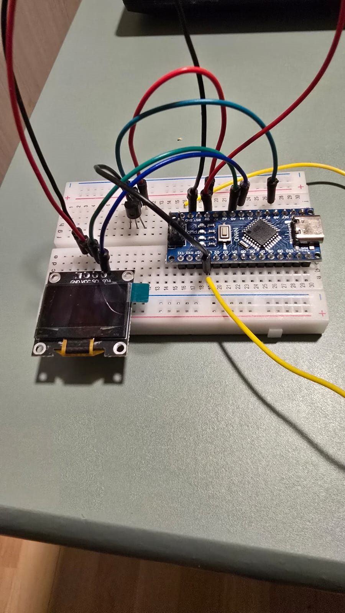

Desarrollo de Prototipos Simples en Arduino
Desde que descubrí Arduino, he estado entusiasmado con la posibilidad de crear mis propios proyectos de electrónica a modo de Hobby. he desarrollado varios prototipos simples que me han permitido explorar la programación y la electrónica de una manera divertida y accesible.
Proyectos que He Desarrollado
Algunos de los proyectos más destacados que he realizado incluyen:
- Controlador de Motor: En este proyecto, utilicé un motor DC que se puede controlar fácilmente con Arduino. Implementé un circuito simple que me permitió regular la velocidad y dirección del motor.
- Servo con Luz Parpadeante: Desarrollé un prototipo donde un servo mueve un pequeño brazo mientras una luz LED parpadea. Este proyecto me ayudó a comprender cómo funcionan los servos y las señales PWM.
- Sistema de Alarma con Sensor de Movimiento: Utilizando un sensor PIR, creé un sistema que activa una alarma cuando detecta movimiento. Este proyecto me dio ideas para posibles aplicaciones de seguridad.
- Estación Meteorológica Básica: Implementé un sistema que mide la temperatura utilizando un sensor LM35. Pude visualizar los datos en tiempo real en una pequeña pantalla LCD, lo que fue un gran aprendizaje sobre la interacción de hardware y software.

A continuación, se muestra un ejemplo de código en Arduino para encender un LED:
void setup() {
pinMode(13, OUTPUT); // Configura el pin 13 como salida
}
void loop() {
digitalWrite(13, HIGH); // Enciende el LED
delay(1000); // Espera un segundo
digitalWrite(13, LOW); // Apaga el LED
delay(1000); // Espera un segundo
}